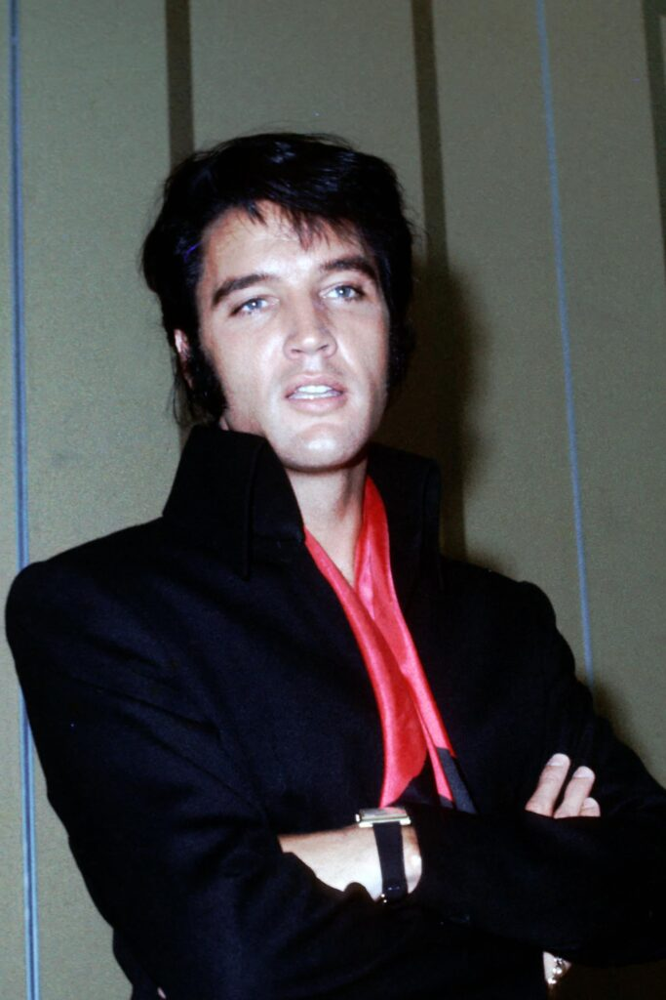
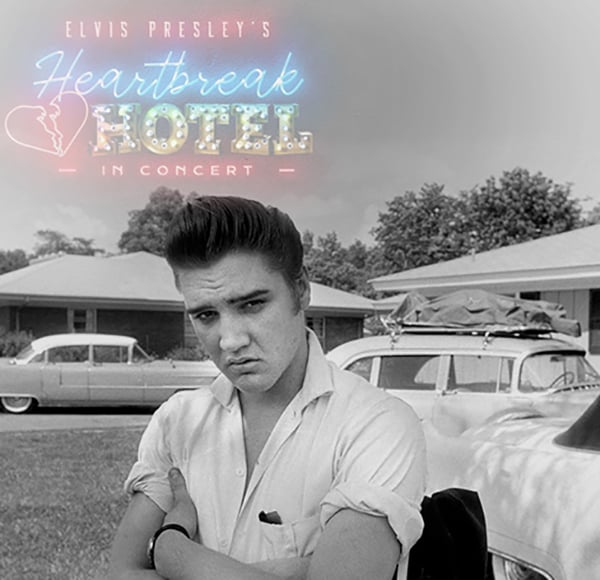
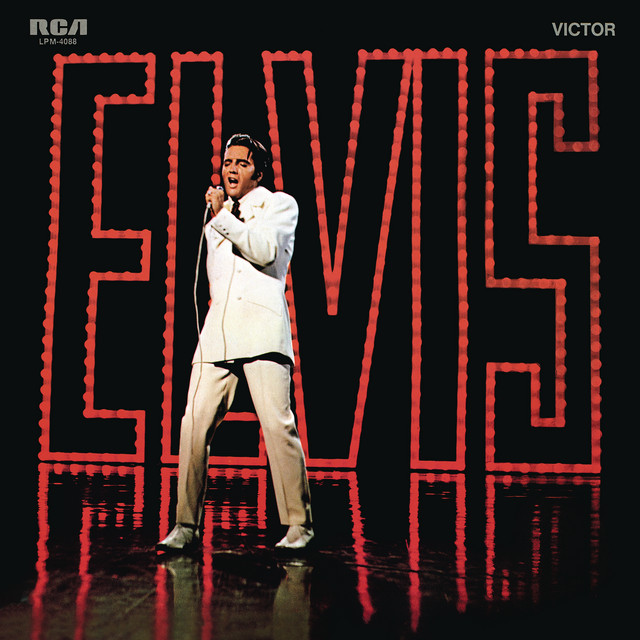

"King Creole," a vibrant and catchy single by Elvis Presley, is the
title track from his 1958 film of the same name. This song showcases
Elvis's smooth vocals against a backdrop of lively rock and roll
rhythms, infused with elements of New Orleans jazz and blues. Its
compelling lyrics and memorable tune highlight Elvis's dynamic
performance style, making it a standout piece in his musical career
and a favorite among fans of classic rock and roll.
2 / 4

In the Ghetto
"In the Ghetto" is one of Elvis Presley's most poignant and
thought-provoking singles, released in 1969. The song tells the
story of a cycle of poverty and violence experienced in the Chicago
ghettos. Written by Mac Davis, the narrative ballad powerfully
captures the despair of the urban poor, highlighting Elvis's
sensitivity to social issues. Its emotive lyrics and tender melody
emphasize the compassion and depth of Elvis's vocal delivery, making
it a powerful call for understanding and change.
3 / 4

Heartbreak Hotel
"Heartbreak Hotel" is one of Elvis Presley's most iconic tracks,
released in 1956 as his first hit single on the RCA label. The song
vividly describes the feelings of loneliness and sorrow after a
romantic breakup, with the lyrics inviting listeners to a
metaphorical hotel where "broken-hearted lovers" stay. Its bluesy
undertones and Elvis’s soulful delivery helped cement the song's
place in the annals of rock and roll history. "Heartbreak Hotel"
quickly became a defining track of Elvis's career, topping the
charts and solidifying his status as a music legend.
4 / 4

If I Can Dream
"If I Can Dream" is one of Elvis Presley's most stirring and
impassioned performances, released in 1968. The song was a notable
departure from his usual repertoire, with its powerful message of
hope and unity resonating deeply during a tumultuous period in
American history. Featuring poignant lyrics that dream of a better
world, free from conflict and filled with harmony, this soulful
track is underpinned by Elvis's rich, emotive voice and a sweeping
orchestral arrangement. It stands as a timeless plea for peace and
brotherhood, showcasing a different, more reflective side of the
King of Rock 'n' Roll.